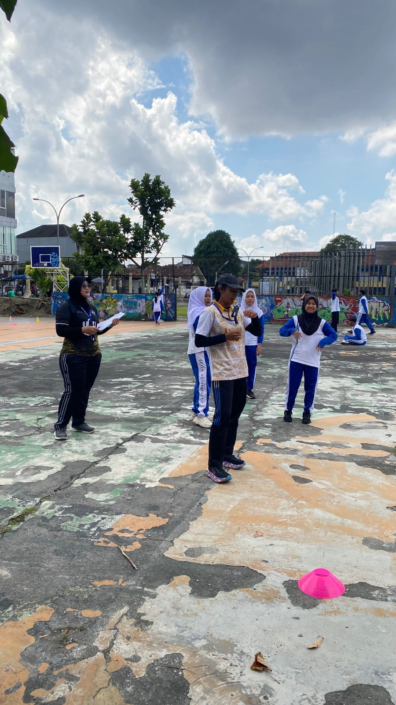
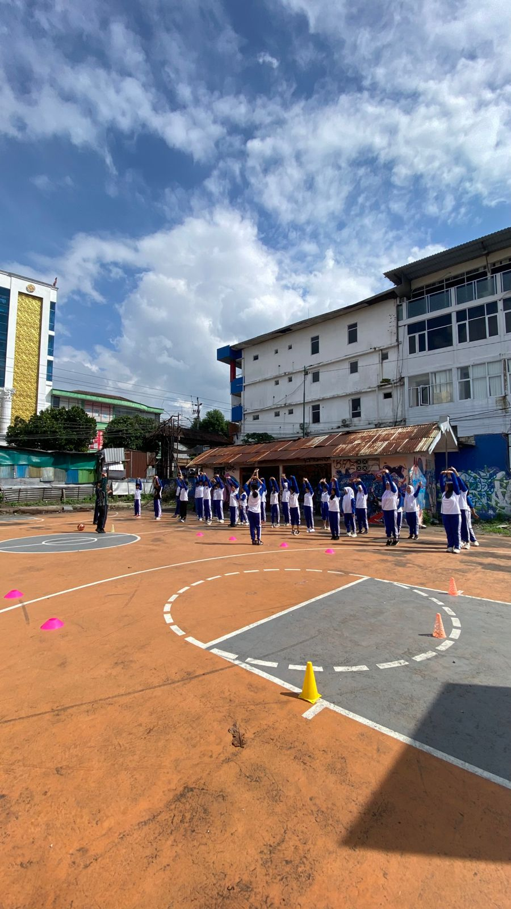
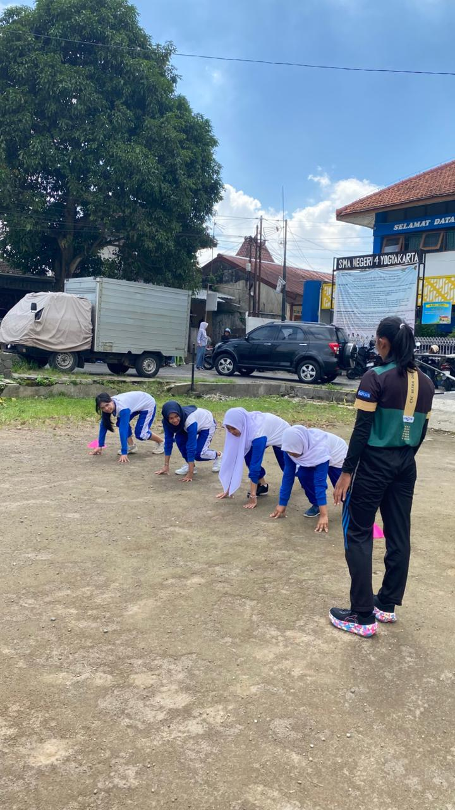
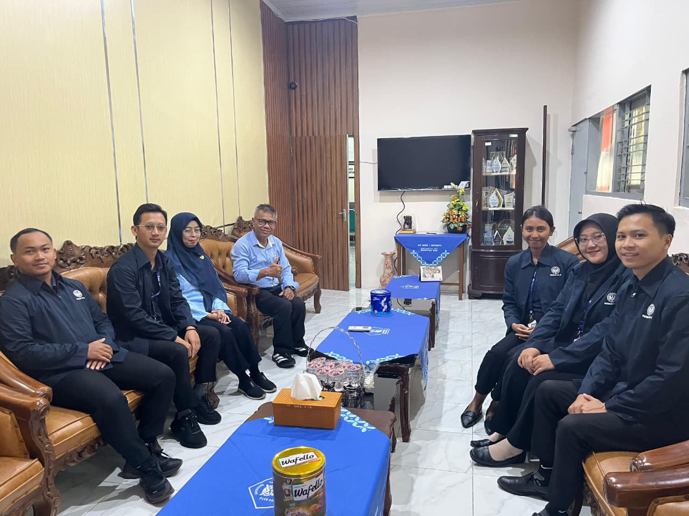
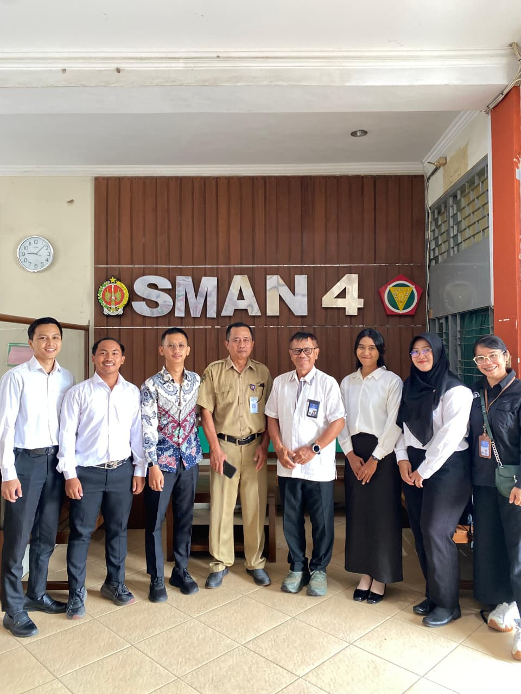

Momen PPL 1
Galeri Dokumentasi Terpilih
Rekam jejak visual perjalanan transformasi mengajar, kolaborasi lapangan, dan interaksi bermakna dalam membimbing kebugaran siswa di SMA Negeri 4 Yogyakarta.

Praktik Mengajar

Asesmen Basket

Asesmen Atletik

Kunjungan DPL

Penerjunan PPL